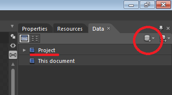

Overview
- For a summary of what Data Binding is see MVVM for people in a hurry
-
For Binding to work, you need to,
- Establish a DataContext
- Bind the XAML attributes in XAML
- Raise an event each time a bound property in the View-Model changes
DataContext
- We define XAML Bindings in a phone page only by the name of the property that they mirror
- The DataContext determines which object these properties refer to
- We can set the DataContext for the whole page to be a fake View-Model object at design-time (i.e. when working in Blend) and the actual View-Model object at runtime
Establishing the Design-Time data context
-
With a phone page loaded up, In the 'Data' tab to the right of Blend click the icon circled below and select 'Create Sample Data', untick 'Enable sample data when the application is running' and accept

-
Now the following line appears in App.xaml
and a new folder appears in the project<SampleData:SampleDataSource x:Key="SampleDataSource" d:IsDataSource="True"/> -
In the XAML for you phone page, insert the following line in the
phoneelement underneath all the namespace declarations to create a DataContext for the entire page,d:DataContext= "{StaticResource SampleDataSource}" -
Because of the line
mc:Ignorable="d"in the phone element, all attributes and elements in thed:namespace are ignored at runtime - You can build out the sample data to match your View-Model class by using the editor launched from the 'Data' tab under 'Project' (underlined in the above figure)
Establishing the run-time data context
-
In the constructor of the code-behind for you phone page insert the line,
this.DataContext = App.VM; - If you have instantiated your View-Model instance in App.xaml.cs as recommended, then this will assign the page DataContext at runtime to the actual ViewModel instance
Binding
- The easiest way to bind elements is in Blend and is far better demonstrated than described, see Blend under Development Tools for People in a Hurry for an introduction on how to use Blend to bind elements
- the absolute basics however are described here
<TextBlock Text="{Binding Name}" />
means that the
Text
attribute of the
TextBlock
is bound to the
Name
property of the
DataContext
object (the ViewModel instance).
Two-way binding
<TextBox Text="{Binding Name, Mode=TwoWay}" />is similar but now the UI can write to the bound property as well as read from it.
Binding via a Convertor
Some attributes require UI specific values. e.g. the Visibility attribute requires the bound data type to be a Visibility enum which is specific to XAML. We might want to convert our app to HTML and so would prefer a plain boolean on the View-Model. This is solved with Converters. These are classes that live in the Converter.cs file in the View folder that intercept the code between the bound property and the XAML attribute.
In the
phone:PhoneApplicationPage.Resources
element,
<My_ViewNamespace:BoolToStrings
x:Key="BoolToVisibilityConverter"/>then the actual binding,
<Canvas Visibility="{Binding IsProtected,
Convertor=BoolToVisibilityConverter}" />
This passes the value of the IsProtected property through the BoolToVisibilityConverter class before showing in the UI. Converter classes implement the
IValueConverter
interface like below,
public class BoolToVisibilityConverter
: System.Windows.Data.IValueConverter
{
public object Convert(object value,
Type targetType, object parameter,
CultureInfo cultureInfo)
{
if ((bool)value)
{
return Visibility.Visible;
}
else
{
return Visibility.Collapsed;
}
}
public object ConvertBack(object value,
Type targetType, object parameter,
CultureInfo cultureInfo)
{
return (Visibility)value
== Visibility.Visible;
}
}Binding to other XAML elements
- We can also bind a XAML attribute to an attribute on another XAML element (rather than a property on the DataContext object)
-
One way to do this is as follows,
which binds the<TextBlock Visibility="{Binding ElementName=myTextBox, Path=Visibility}" />Visibilityattribute of thisTextBlockto theVisibilityattribute of another element namedmyTextBox. WhenmyTextBoxbecomes visible, so does thisTextBlock
INotifyPropertyChanged
- The bound View-Model class needs to notify the View to update when one of its bound properties changes
-
This is achieved by implementing the
INotifyPropertyChangedinterface
Use the following template for you View-Model class to do this,
// ... using declarations here ...
namespace YourAppName.ViewModel {
public class AppViewModel {
// An example string property
private string _myString1;
public string MyString1
{
get { return this._myString1; }
set {
if (this._myString1 != value)
{
this._myString1 = value;
RaisePropertyChanged("MyString");
}
}
}
// ... Rest of View-Model code here ...
public event PropertyChangedEventHandler
PropertyChanged;
protected virtual void
RaisePropertyChanged(string
propertyName)
{
if (this.PropertyChanged != null)
{
this.PropertyChanged(this,
new PropertyChangedEventArgs
(propertyName));
}
}
}
}-
The above is for an example property of type string and should work for any other type, however,
-
if the type is an object, then changes on properties on the object will not update the View unless you implement the
INotifyPropertyChangedinterface in the object class as well -
if the type is an array or
Listthen changes to that array orListwill not update the View. UseObservableCollectionwhich behaves exactly likeListbut implements the INotifyPropertyChanged interface
-
if the type is an object, then changes on properties on the object will not update the View unless you implement the
-
If your app uses a database then you also need to implement the similar
INotifyPropertyChangingevent - see Linq-To-SQL guide